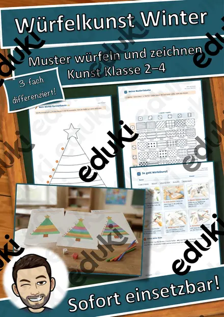
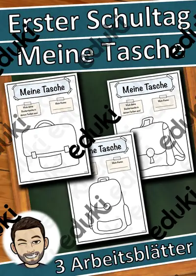

Igel im Laubnest – Klappnest basteln mit Sachtext Winterschlaf, 3-fach differenziert (Tiere im Herbst, Klasse 1/2)

Der Kürbis von innen – Klapp-Kürbis basteln und beschriften, 3-fach differenziert (Halloween/Herbst, Klasse 1/2)

Halloween-Handpuppen – Bastelvorlage mit Sachtext und Puppentheater, 3-fach differenziert (Klasse 1/2)

Fingerpuppen Wintertiere – Bastelvorlage mit Sachtext und Sprechaufgaben, 3-fach differenziert (Klasse 1/2)

Wimpelkette Winter – Bastelvorlage mit Wintermotiven, Buchstaben WINTER und eigenen Wimpeln, 3-fach differenziert (Klasse 1–4)

Advents-Häuserstadt – Klassen-Adventskalender zum Basteln mit 24 Adventsaufgaben, 3-fach differenziert (Klasse 1–4)

Papier-Schneeflocken falten und schneiden – Winter-Bastelvorlage mit Sachtext, 3-fach differenziert (Klasse 2/3)

Fensterlaterne Sankt Martin – Laterne basteln mit Lesetext zur Legende, 3-fach differenziert (Klasse 1–3)

Spiral-Gespenster zum Aufhängen – Halloween-Bastelvorlage mit Lesetext, 3-fach differenziert (Klasse 2/3)

Gespensterhaus aus meiner Hand – Halloween-Bastelvorlage mit Lesen und Schreiben, 3-fach differenziert (Klasse 1/2)

Herbst-Forscher-Kamera – Papier-Kamera zum Laminieren mit Foto-Aufträgen und Fotoalbum, 3-fach differenziert (Klasse 1/2)

Würfelkunst Winter – Tannenbaum-Muster erwürfeln und zeichnen, 3-fach differenziert (Klasse 2–4)

Gemeinschaftsposter Winter „Gemeinsam leuchten wir“ – Klassenposter aus 24 Teilen, 3-fach differenziert (Klasse 1–4)

Ausmalbild Frühblüher - Kunst Ausmalbilder Frühling - Blumen

Sternbilder Projektion - Materialpaket - Sternbildsucher #edukiknaller2021

Sternbildsucher - Projektor Sternzeichen Wassermann

Sternbildsucher - Projektor Sternzeichen Jungfrau

Pixelbilder Super Mario (Kunst, Vertretung, Konzentrationsübung)

Erster Schultag - Schultasche

Wasserfarben, Techniklabor Wasserfarben, Wasserfarbe Einführung, Führerschein, ab 1. Klasse

50 Weitermalbilder, Kunstideen, Vertretungsstunden, Kunst, Entspannung
Keine Materialien gefunden – versuch einen anderen Suchbegriff oder Filter.